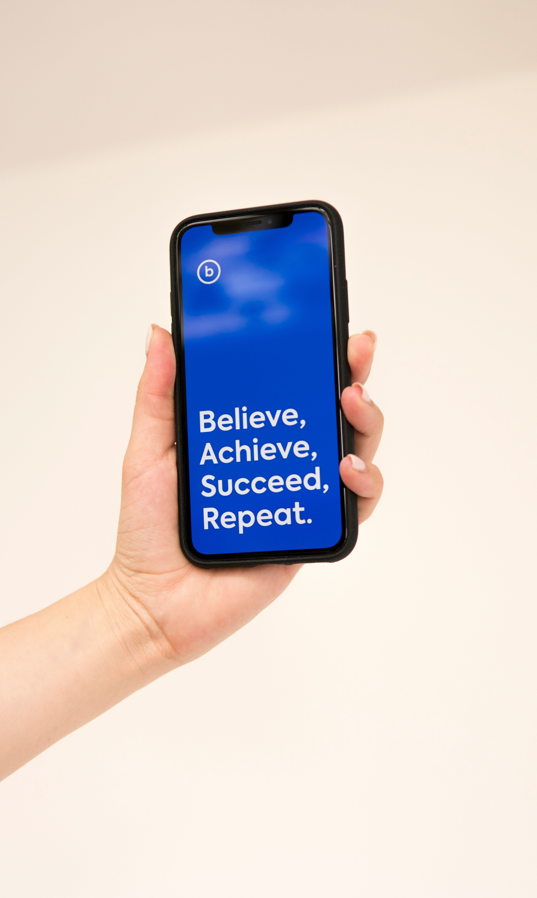

Our History
TechCon began in 2010 as a small gathering of tech enthusiasts and has since grown into a global conference featuring top minds in the industry.

TechCon began in 2010 as a small gathering of tech enthusiasts and has since grown into a global conference featuring top minds in the industry.
Empowering innovation and the next generation by connecting industry leaders, innovators, and investors.
We’ve welcomed many influential figures in tech over the years. Here are a few highlights:
Former commercial radio executive turned radio consultant, historian and broadcaster, David has been in radio for over forty years, running stations of all formats from Galaxy to Century, LBC to Virgin.

Rupert is very old and has therefore filled many roles, including Senior Engineer Radiophonic Workshop, Senior Engineer Maida Vale and Head of Technology for Audio at the BBC.